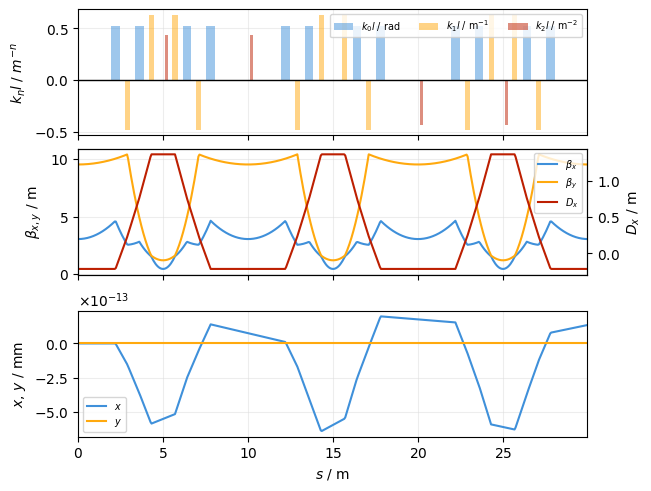
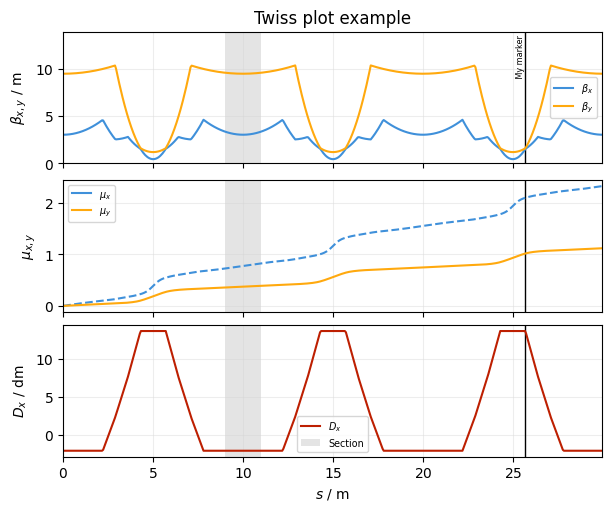

Twiss#
This is an example of plotting lines and twiss results. First, create a simple line and a tracker:
Show imports
%load_ext autoreload
%autoreload 2
import xtrack as xt
import xpart as xp
import xplt
import numpy as np
xplt.apply_style()
Show line generation code
## Generate a simple 6-fold symmetric FODO lattice
n = 6 # number of sections
elements = {
"QF": xt.Multipole(length=0.3, knl=[0, +0.63]),
"QD": xt.Multipole(length=0.3, knl=[0, -0.48]),
"MU": xt.Multipole(length=0.5, knl=[np.pi / n], hxl=[np.pi / n]),
}
parts = {
"a": [xt.Node(0.7, "QF"), xt.Node(1.4, "MU"), xt.Node(2.1, "QD"), xt.Node(2.8, "MU")],
"b": [xt.Node(2.2, "MU"), xt.Node(2.9, "QD"), xt.Node(3.6, "MU"), xt.Node(4.3, "QF")],
}
nodes = [xt.Node(5.0 * i, "a" if i % 2 else "b", name=f"S{i+1}") for i in range(n)]
# sextupoles
for i in range(n):
sx = xt.Multipole(length=0.2, knl=[0, 0, 0.5 * np.sin(2 * np.pi * (i / n))])
nodes.append(xt.Node(0.2, sx, from_=f"S{i+1}", name=f"S{i+1}SX"))
line = xt.Line.from_sequence(
nodes, length=5.0 * n, sequences=parts, elements=elements, auto_reorder=True
)
line.particle_ref = xp.Particles()
line.build_tracker();
Then determine it’s twiss parameters. We use the at_s parameter to get the result as function of s rather than at each element only.
tw = line.twiss(method="4d", at_s=np.linspace(0, line.get_length(), 500, endpoint=False))
Default twiss plot#
Create a default TwissPlot:
plot = xplt.TwissPlot(tw, line=line)

Customisation#
Use the parameter kind to specify what is plotted. See TwissPlot for details.
print(", ".join(sorted(tw.keys(), key=lambda a: a.lower())))
alfx, alfy, beta0, betx, betx1, betx2, bety, bety1, bety2, betz0, c_minus, c_r1_avg, c_r2_avg, circumference, delta, dmux, dmuy, dpx, dpy, dqx, dqy, dx, dx_zeta, dy, dy_zeta, dzeta, gamma0, gamx, gamy, line_config, method, momentum_compaction_factor, mux, muy, muzeta, name, nux, nuy, nuzeta, only_markers, orientation, p0c, particle_on_co, ptau, px, py, qs, qx, qy, R_matrix, radiation_method, reference_frame, s, slip_factor, steps_r_matrix, T_rev0, values_at, W_matrix, x, y, zeta
Tip
Use prefix notation as shorthand to plot both x- and y-properties, e.g. bet for betx+bety
plot = xplt.TwissPlot(tw, figsize=(6, 5), kind="bet,mux+muy,dx", display_units=dict(d="dm"))
# show legends
plot.legend()
# add some annotations
plot.axline("s", line.get_s_position("S6QF"), annotation="My marker", annotation_loc="upper")
plot.axspan("s", 9, 11, label="Section")
# adjust some axes
plot.axis(0).set(title="Twiss plot example", ylim=(0, 14))
# adjust line layout
plot.artist("mux").set(ls="--")
plot.artist(subplot=2).set(c="pet2")
plot.legend(2, loc="lower center") # reflect update in legend

See also